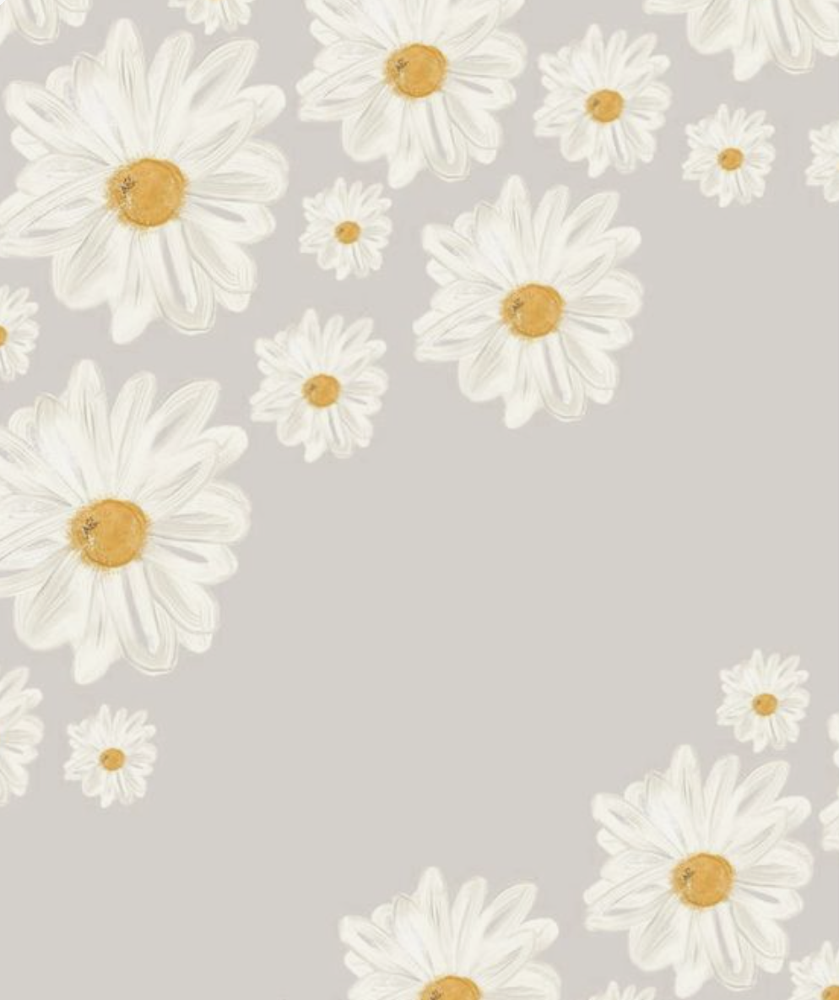

oragami aand designs
Origami, also called paper folding, art of folding objects out of paper to create both two-dimensional and three-dimensional subjects.
Camel

Interesting Facts about camels
- There are two types of camels: One humped or “dromedary” camels and two humped Bactrian camels.
- Camels have three sets of eyelids and two rows of eyelashes to keep sand out of their eyes.
- Camels have thick lips which let them forage for thorny plants other animals can't eat.
Pigeon

Interesting Facts about pigeons
- Pigeons are incredibly complex and intelligent animals
- Pigeons are highly sociable animals
- Pigeons are renowned for their outstanding navigational abilities
Panda

Interesting Facts about pandas
- Pandas go from pink to white and black (or brown)
- An adult can eat 12–38 kilos of bamboo per day!
- A giant panda is much bigger than your teddy bear.